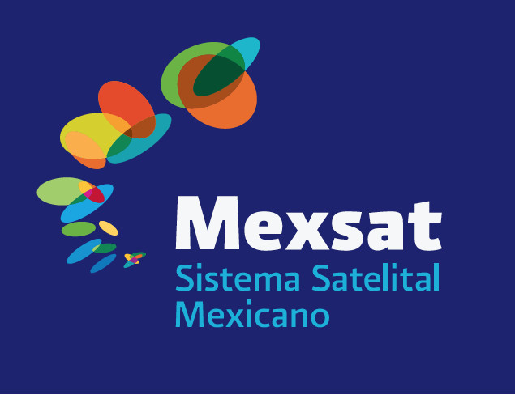
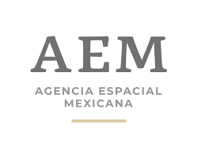
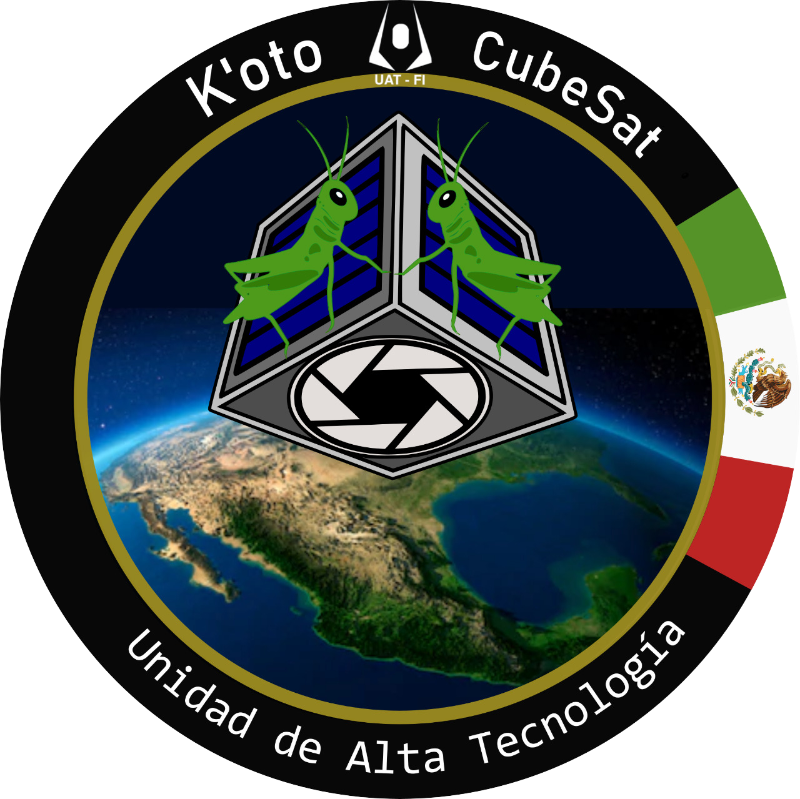
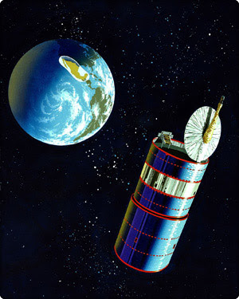

🇲🇽 El primer satélite mexicano (1985)
Morelos I, primer satélite mexicano, es lanzado el 17 de junio de 1985 desde Cabo Cañaveral en el transbordador Discovery de la NASA, marcando el inicio de la era espacial del país.
México y el espacio: soberanía y conocimiento
El programa espacial mexicano ha impulsado comunicaciones, ciencia y formación de talento. Desde los satélites Morelos I y II lanzados en 1985, pasando por Solidaridad y la modernización con MEXSAT, México busca fortalecer su infraestructura espacial con apoyo de universidades, centros de investigación y la Agencia Espacial Mexicana (AEM), consolidándose como un actor relevante en el ámbito espacial latinoamericano.

Morelos I, primer satélite mexicano, es lanzado el 17 de junio de 1985 desde Cabo Cañaveral en el transbordador Discovery de la NASA, marcando el inicio de la era espacial del país.
Rodolfo Neri Vela viaja al espacio a bordo del transbordador Atlantis en noviembre de 1985, convirtiéndose en el primer mexicano en el espacio, participando junto al satélite Morelos II.
La red satelital mexicana MEXSAT se despliega con los satélites Bicentenario (2012), Centenario (2014) y Morelos 3 (2015), consolidando la tercera generación satelital del país.
Se crea la Comisión Nacional del Espacio Exterior, iniciando la planeación de actividades espaciales civiles y la formación del primer capital humano especializado en México.
México pone en órbita sus primeros satélites de comunicaciones: Morelos I (17 de junio) y Morelos II (27 de noviembre). En esta última misión viaja Rodolfo Neri Vela, el primer astronauta mexicano.
Se lanzan los satélites de segunda generación Solidaridad I (20 de noviembre de 1993) y Solidaridad II (7 de octubre de 1994), ampliando la cobertura y capacidad de telecomunicaciones a nivel regional.
Se crea la Agencia Espacial Mexicana (AEM) como organismo descentralizado encargado de coordinar, impulsar y ejecutar las actividades espaciales del país, fortaleciendo la cooperación internacional.
La exploración espacial mexicana se construye con la colaboración entre gobierno, academia y centros de ingeniería. Estas instituciones lideran la planeación, la investigación y el desarrollo de tecnología satelital y aeroespacial.

Coordina la política espacial nacional, promueve el uso pacífico del espacio y fomenta la cooperación internacional y el desarrollo de talento especializado.

La Universidad Nacional Autónoma de México (UNAM) impulsa proyectos de nanosatélites como el "K'OTO", en colaboración con la Agencia Espacial Mexicana y el Instituto Politécnico Nacional (IPN), impulsando la formación de especialistas en ingeniería aeroespacial.

Inaugurado en 1985, el Sistema Morelos marcó el primer gran paso de México en la era satelital, permitiendo la transmisión nacional de televisión y telefonía, y sentando las bases para las futuras generaciones.

La red satelital MEXSAT, compuesta por los satélites Bicentenario, Centenario y Morelos 3, representa la tercera generación satelital mexicana, ofreciendo servicios de comunicación de banda ancha y telefonía en todo el territorio nacional.
Lanzamiento de Morelos I, el primer satélite mexicano.
Creación de la Agencia Espacial Mexicana, unificando los esfuerzos espaciales del país.
La red satelital de tercera generación que brinda servicios avanzados de telecomunicaciones.
Noticias, proyectos estratégicos, programas educativos y cooperación internacional.